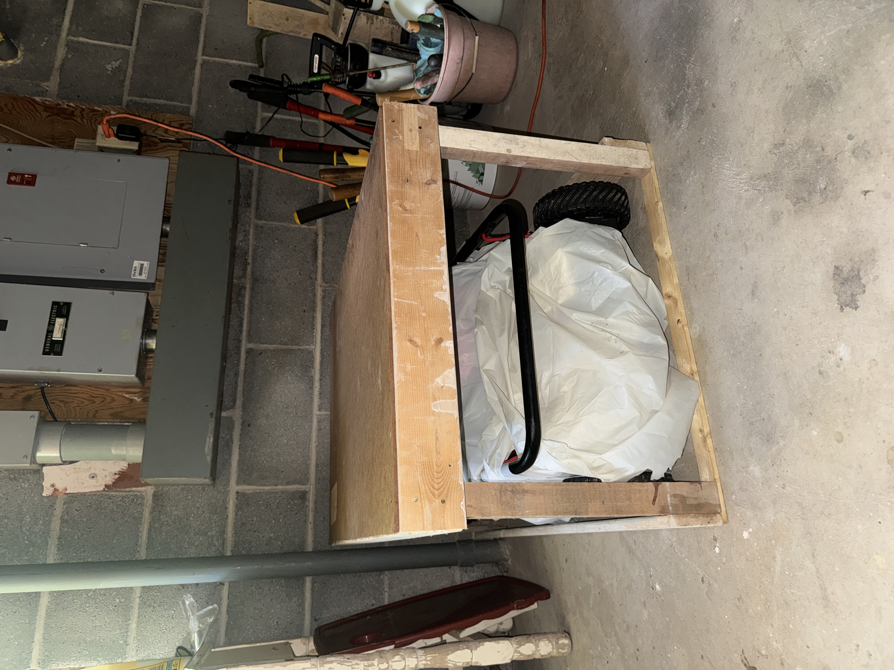
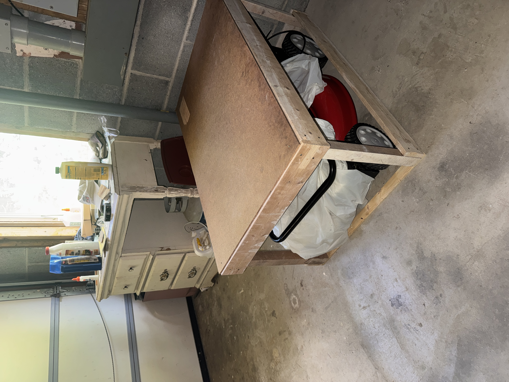

For my grandfather's birthday, I designed and built a lawn mower cover using scrap materials and minimal hand tools. The project transformed unused vertical space above his lawn mower into practical storage through a simple and functional wooden structure.

